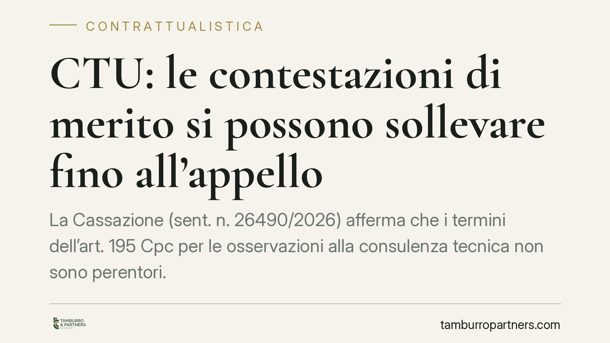

CTU: le contestazioni di merito si possono sollevare fino all'appello
La Cassazione (sent. n. 26490/2026) afferma che i termini dell'art. 195 Cpc per le osservazioni alla consulenza tecnica non sono perentori. Le contestazioni valutative di merito alla CTU restano proponibili anche in comparsa conclusionale e in appello, a condizione che siano mere difese e non introducano fatti, domande, eccezioni o prove nuove. Una precisazione che pesa in molte liti condominiali e contrattuali.

Il caso e il principio
La consulenza tecnica d'ufficio (CTU) è lo strumento con cui il giudice si fa assistere da un esperto per valutare questioni che richiedono competenze specialistiche: stima di danni, vizi di un immobile, ricostruzione di conti condominiali, verifica dello stato di un'opera. La parte che riceve la relazione del consulente ha un termine per depositare le proprie osservazioni, secondo quanto previsto dall'art. 195, comma 3, Cpc.
La domanda pratica è ricorrente: se non contesto la CTU entro quel termine, perdo per sempre la possibilità di criticarla? La Cassazione, Sez. II, con la sentenza n. 26490/2026 risponde di no. Quel termine non ha natura di decadenza (cioè non è uno "sbarramento" che chiude definitivamente la porta). Le critiche di merito alla consulenza possono essere riproposte anche in comparsa conclusionale e persino in appello.
Inquadramento normativo
L'art. 195 Cpc disciplina il procedimento di deposito della relazione del CTU e assegna alle parti un termine per trasmettere le proprie osservazioni al consulente prima della stesura definitiva. La Corte precisa che la violazione di questo termine va letta alla luce dell'art. 157 Cpc, che richiede, per far valere una nullità relativa, un'eccezione tempestiva della parte interessata.
Il punto decisivo è la distinzione tra due piani. Da un lato ci sono le nullità procedurali della CTU (vizi nel modo in cui la consulenza è stata svolta): queste vanno eccepite nella prima difesa utile, altrimenti si sanano. Dall'altro ci sono le contestazioni di merito, cioè le critiche al contenuto valutativo della relazione, alle conclusioni del consulente, al metodo di stima. Queste ultime restano mere difese: non sono soggette a preclusione e possono essere sviluppate fino all'appello, nei limiti dell'art. 345 Cpc.
Il confine è netto: finché si discute del *valore probatorio* della consulenza, si resta nel terreno della difesa libera. Se invece, con il pretesto di criticare la CTU, si introducono fatti nuovi, nuove domande, nuove eccezioni in senso stretto o nuove prove, scattano le preclusioni ordinarie del processo.
Implicazioni pratiche
Per chi è coinvolto in una causa di contrattualistica o condominiale, la pronuncia ha ricadute concrete.
In materia condominiale, pensiamo alla lite sui difetti costruttivi delle parti comuni, alla ripartizione delle spese contestata in sede giudiziale, alla stima dei danni da infiltrazione. Qui la CTU è spesso l'elemento centrale. Sapere che le critiche sostanziali alla relazione non muoiono con il termine dell'art. 195 Cpc amplia il margine difensivo.
In materia di contratti, la CTU interviene su quantificazione del danno da inadempimento, verifica della conformità della prestazione, accertamento di vizi. Anche in appello la parte potrà insistere sull'erroneità metodologica o valutativa del consulente.
Attenzione però: questa apertura non è un'autorizzazione a rinviare tutto. Il giudice resta libero di valutare la credibilità e la tempestività sostanziale delle critiche. Una contestazione sollevata solo in appello, su un profilo che poteva emergere subito, rischia di essere meno persuasiva anche se formalmente ammissibile.
Cosa fare in concreto
- Depositate comunque le osservazioni nel termine dell'art. 195 Cpc. La tempestività rafforza la posizione difensiva ed evita contestazioni sulla tardività sostanziale, anche quando non c'è decadenza formale.
- Distinguete fin da subito nullità procedurali e critiche di merito. Le prime vanno eccepite nella prima difesa utile, pena la sanatoria; le seconde restano proponibili più avanti.
- Non mascherate novità dietro una critica alla CTU. Fatti, domande, eccezioni in senso stretto e prove nuove restano soggetti alle preclusioni: introdurli tardivamente è inammissibile.
- Valutate una CTP tempestiva. La consulenza tecnica di parte documenta per iscritto le obiezioni e ne fissa la data, offrendo una base solida per le difese successive.
- In appello, costruite le censure sul valore probatorio. Concentrate l'impugnazione sull'errore valutativo o metodologico del consulente, restando dentro i limiti dell'art. 345 Cpc.
Consigliamo di impostare la strategia difensiva sulla CTU sin dal deposito della bozza, senza affidarsi all'idea che tutto sia recuperabile in appello: la facoltà esiste, ma il peso delle critiche cresce quando sono sollevate per tempo.
*Contributo informativo a cura di Tamburro & Partners - Avv. Giuseppe Tamburro. Non costituisce parere legale.*
Ogni contratto ha il suo equilibrio.
Se vuoi una revisione delle clausole o una redazione su misura, scrivi allo studio. Ti rispondiamo entro un giorno lavorativo.